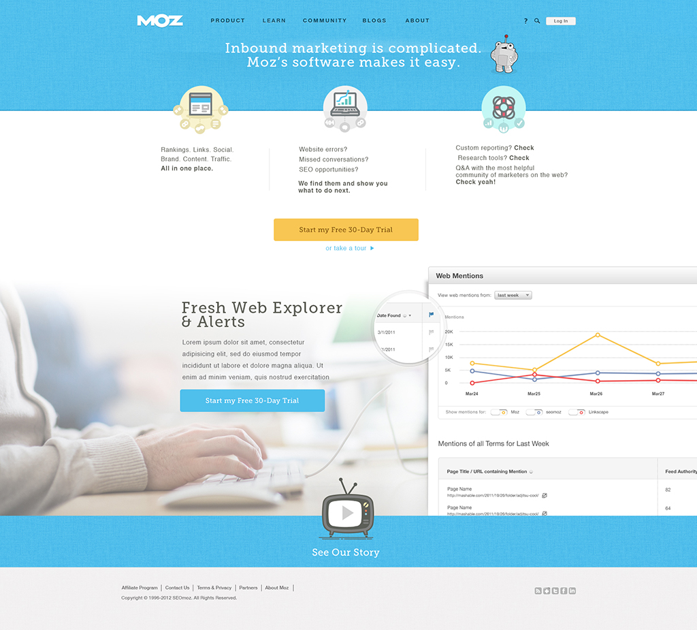
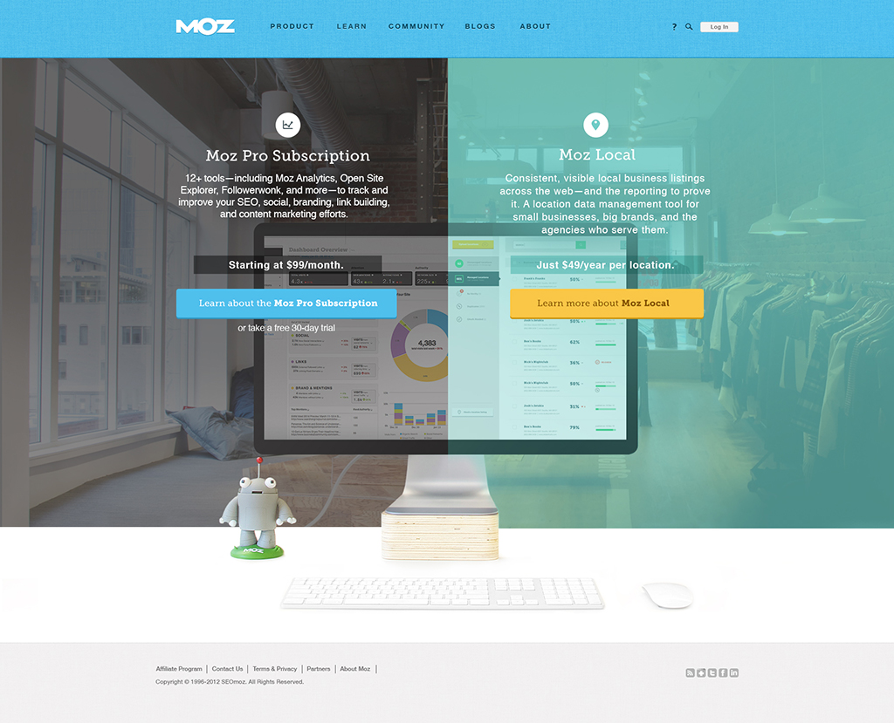
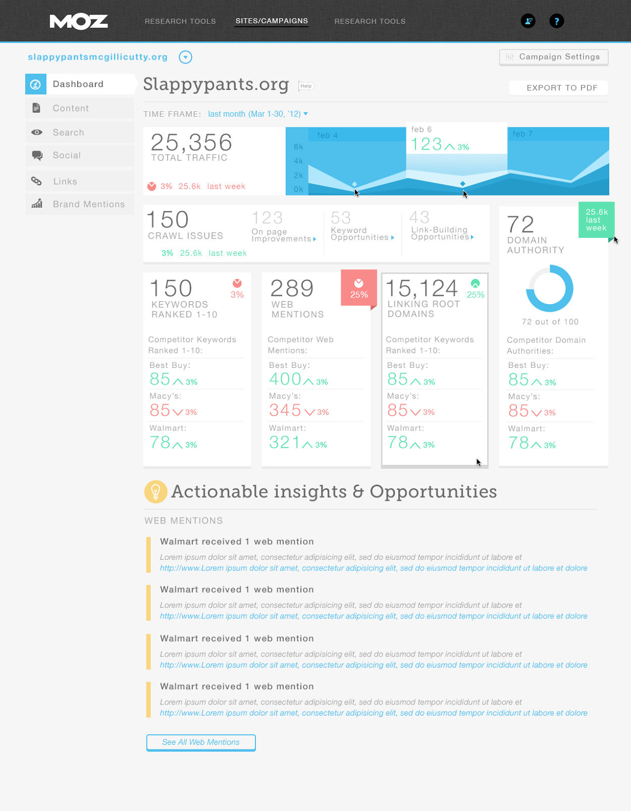
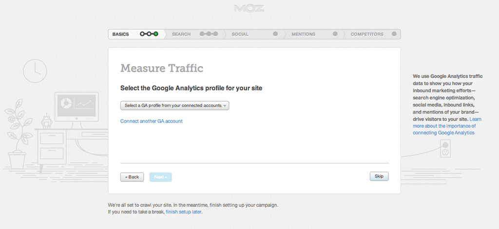
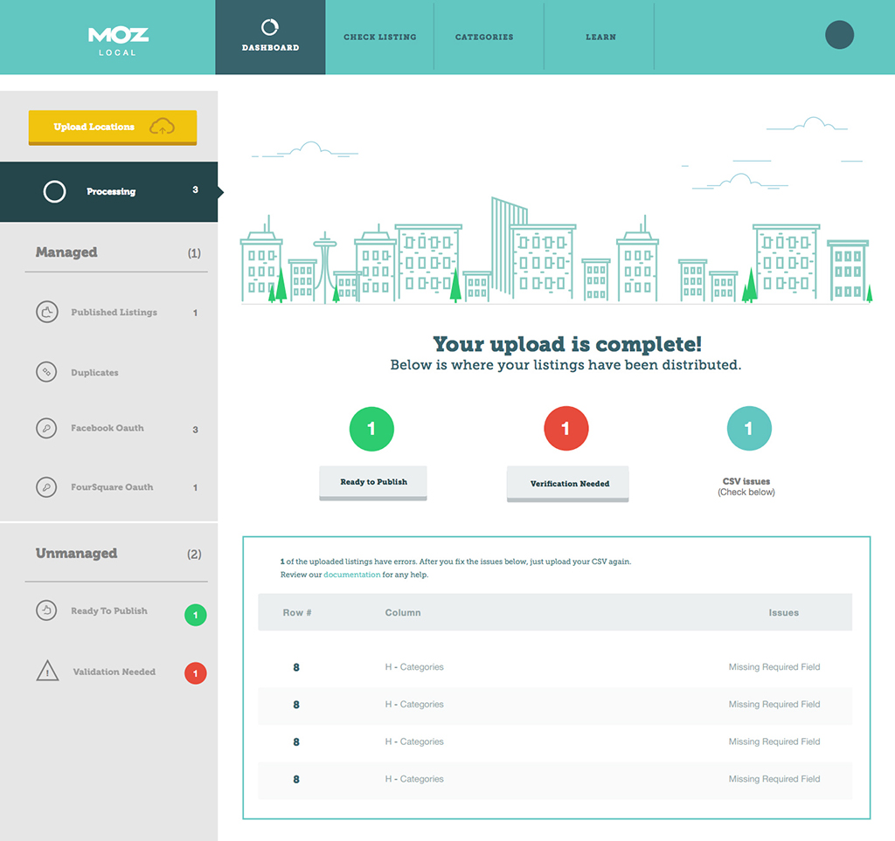
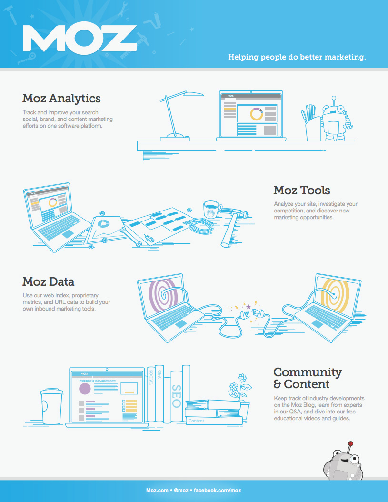
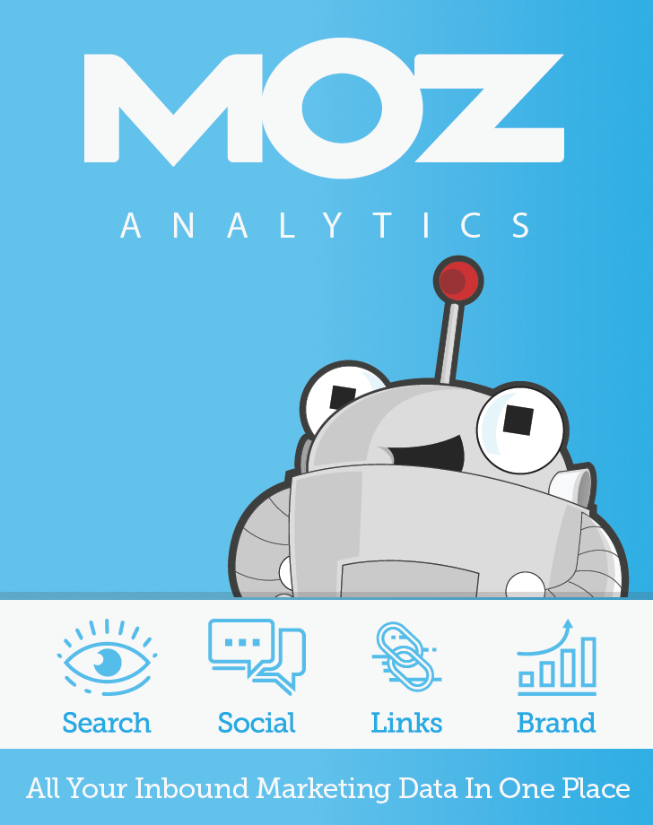

Head of Creative
At Moz I headed the creative department, overseeing a team of 6 designers working on everything UX and design related—from product design to marketing, brand, and content. During this time, Moz became one of the most recognized brands in marketing technology.
Moz was a Seattle-based company providing SEO software, tools, and resources for digital marketers. When I joined, Moz had already built a strong community following through its educational content and transparent company culture. My role was to lead all creative efforts and elevate both the product experience and brand.
As Head of Creative, I was responsible for the full spectrum of design work: product UX, visual design, marketing campaigns, brand identity, and content design. For most of the work below I provided high level and often detailed direction, but the actual design work was done by my very talented UX & Design team.
During my time heading the creative team, MarketingLand conducted a study of brand recognition in the marketing technology space. The results were remarkable.
MOST RECOGNIZED MARKETING TECH BRANDS
The Moz.com frontpage was a critical touchpoint for converting visitors into customers. We created multiple design concepts and conducted extensive A/B testing to optimize conversion rates.


We designed product pages that allowed for both direct and scenario-based product selection. Users could select an answer and see the products that applied highlighted below.


Moz Analytics was the company's flagship product, providing comprehensive SEO insights and reporting. We worked on both incremental improvements and more ambitious redesigns.

Since getting data and actionable insights as quickly as possible was critical, we greatly improved the setup experience so all necessary data was gathered from users as early as possible.

Moz Local helped businesses manage their local listings across the web. We designed both the marketing presence and the product experience.

As with any Moz product, there's significant work needed before users see data and insights. We created introduction and setup wizards, inline messaging for empty states, and email notifications. And as always at Moz, it was important to introduce just the right level of humor and fun into the experience.


We came up with the concept of mini-wires—very light-weight wireframes with just enough detail to iterate with all different disciplines on taskflow and information architecture, but not so much that reviews quickly devolve into discussing small UI details.
The UX Strategist on the team evolved these into a very useful tool that became part of our standard design process.

About half my team at Moz worked on creating massive amounts of marketing materials—from ad banners, to sites, to whitepapers, to physical items like Roger (the mascot) clothing and dolls. My team even significantly contributed to the Moz office interior design when we moved into a new space.


My 6-person team covered an incredible breadth of work:
UX design and research for Moz Analytics, Moz Local, and other products across web and mobile.
Creating and maintaining the visual identity system across all touchpoints.
Website design, landing pages, email campaigns, and digital advertising.
Brand guidelines, illustration, motion design, and the beloved Roger mascot.